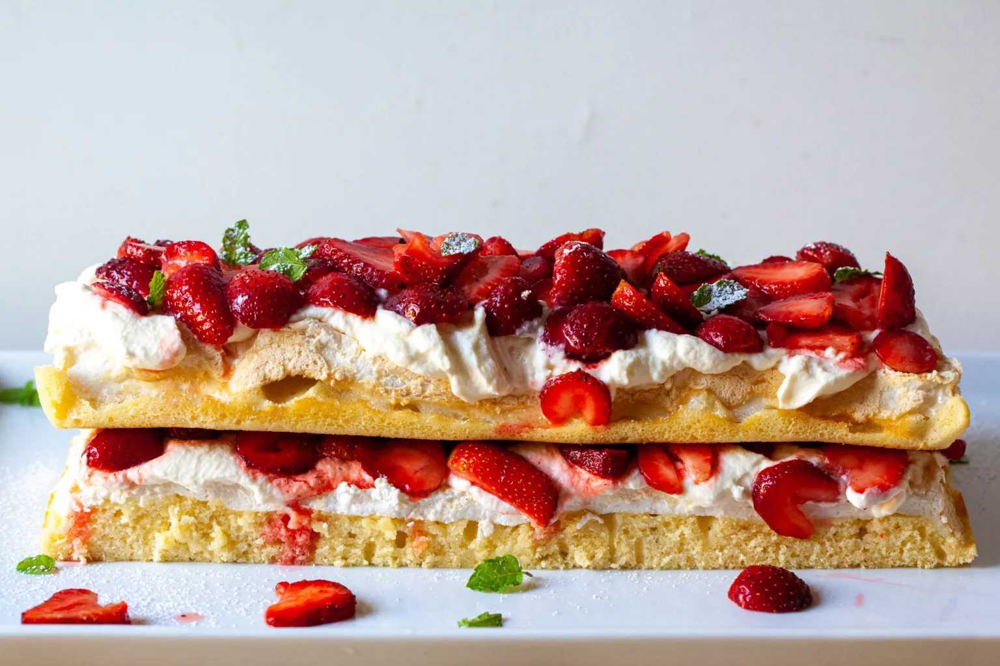
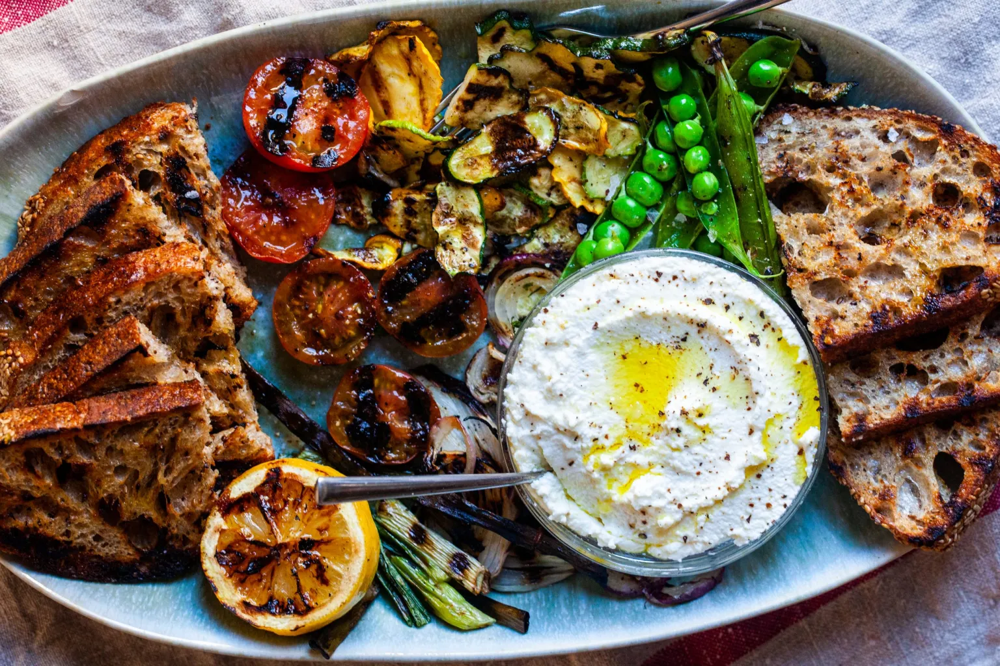
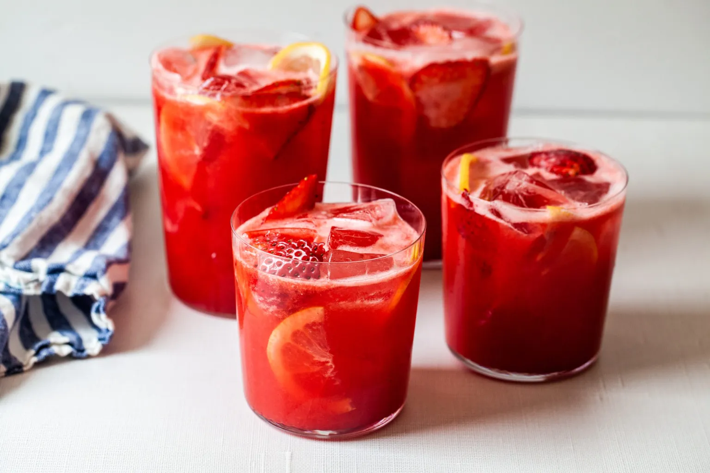
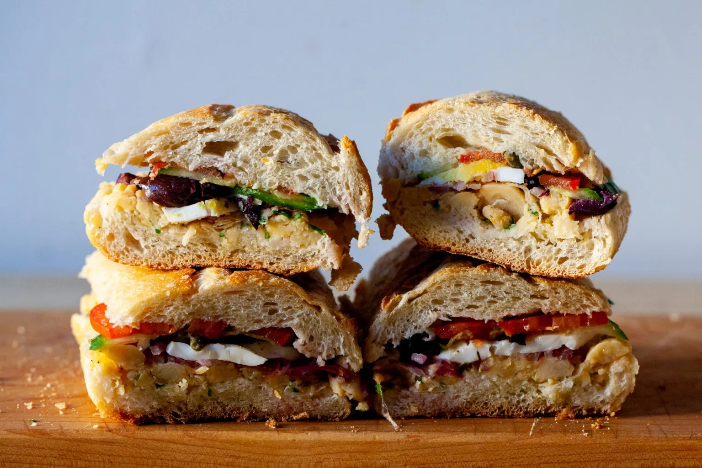

Smitten Kitchen
Home
About
Recipes
Spring
Summer
Fall
Winter
Contact
What Am I Cooking Today?
Summer
Summer cooking is all about simplicity: grilling, fresh salads, and letting the ingredients shine.

Tomatoes
Zucchini
Cucumbers
Bell Peppers
Eggplant
Sweet Corn
Green Beans
Summer Squash
Watermelon
Cantaloupe
Peaches
Nectarines
Blackberries
Raspberries
Blueberries
Mint
Basil
Oregano
Chives
Parsley

Summer ricotta with grilled vegetables

Easy strawberry lemonade

Chickpea pan bagnat